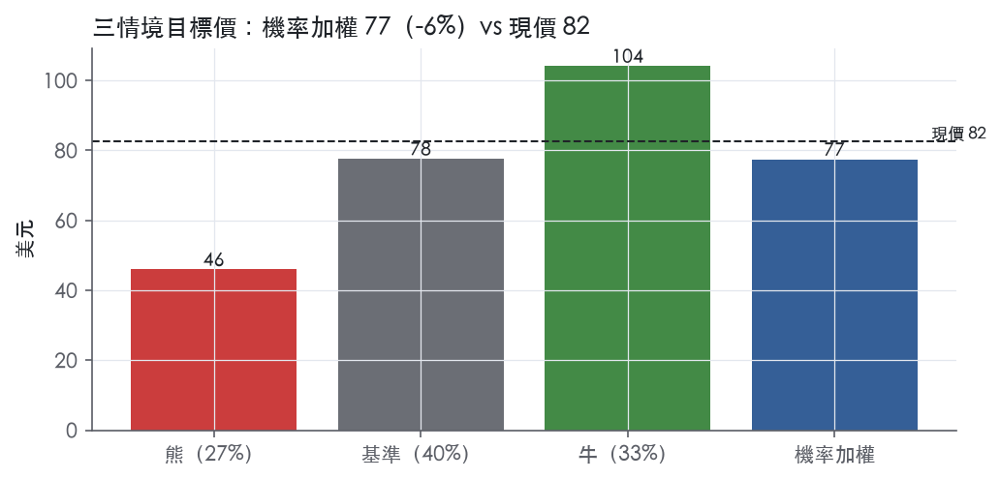
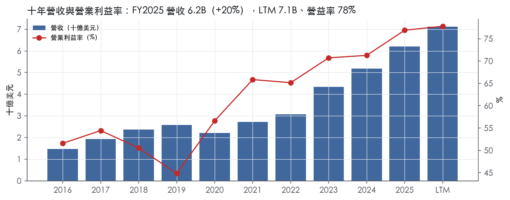
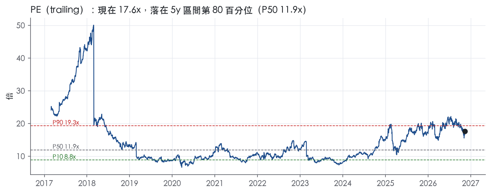
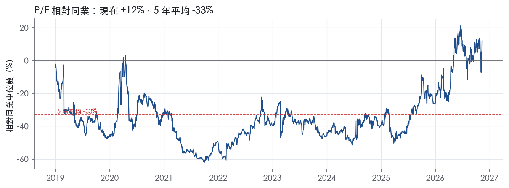
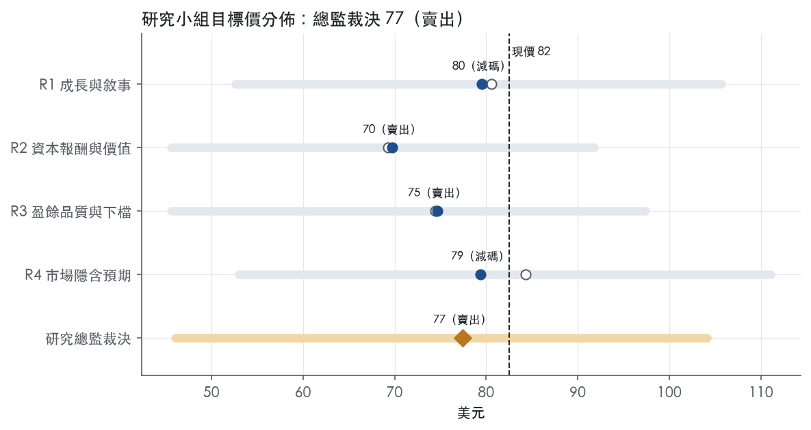
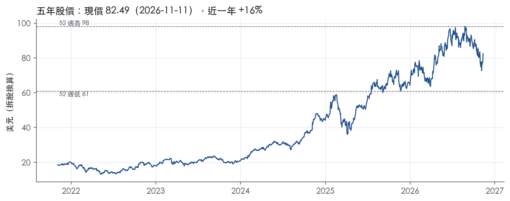

評等總表 › 金融 › IBKR
成長降檔壓倍數，現價已付足，看空｜評等 賣出｜目標價 77
| 報告日 | 評等 | 目標價 | 當時股價 | 超額報酬 |
|---|---|---|---|---|
| 2026-11-11 | 賣出 | 77.42 | 82.49 | -15.6% |
| 2026-10-30 | 減碼 | 74.11 | 76.90 | -13.2% |
| 評等 | 賣出（邊界，鄰近減碼） |
| 12 個月目標價 | 77 美元 |
| 現價 | 82.49 美元（2026-11-11） |
| 預期報酬 | 股價 -6.2%＋股息 0.4%＝總報酬 -5.7%；同業籃門檻 9.9%，超額 -15.6% |
| 估值方法 | P/E 25.0x，套在第 5–8 季的EPS（也就是一年後的未來四季） |
| 三情境 | 熊 46／基準 78／牛 104 |
| 研究流程 | 四位研究員兩輪辯論＋研究總監裁決 |
| 資料來源 | SEC EDGAR XBRL、Tiingo、FRED（全免費） |
成長降檔壓倍數，現價已付足，看空（研究總監裁決，四位研究員兩輪辯論後）
評等 賣出（邊界，鄰近減碼）｜12 個月目標價 77 美元（總監三情境機率加權 78 與研究員中位數 77 各半）｜現價 82.49（2026-11-11）
預期報酬：股價 -6.2%＋股息 0.4%＝總報酬 -5.7%。同業籃門檻 9.9%，超額 -15.6%，離減碼的分界不到三個百分點，屬邊界評等（落在其他級距的機率約四成）。
估值方法：P/E 25.0x，套在第 5–8 季的EPS（也就是一年後的未來四季）。三情境：熊 46（27%）／基準 78（40%）／牛 104（33%）。
什麼會讓研究總監改變看法：FY2026Q4 手續費年增重回 20% 以上且股票成交量年增轉正，我把倍數上調到持平點 28.7x、轉中性；手續費連兩季年減且帳戶年增跌破 25%，倍數降到 22x、熊機率升到四成。
| 過去四季（實際，FY2026Q3） | 未來四季 | 第 5–8 季 | 第 9–12 季 | |
|---|---|---|---|---|
| 營收（B） | 7.1B | 8.0B | 8.9B | 9.6B |
| 營收成長 | 19.7% | 13.0% | 10.0% | 8.0% |
| 營業利益率 | 77.8% | 77.8% | 77.8% | 77.8% |
| EPS（美元） | 4.68 | 2.84 | 3.10 | 3.34 |
| EPS 成長 | 23.0% | -39.4% | 9.5% | 7.5% |
| 每股股息（美元） | — | 0.00 | 0.00 | 0.00 |
| P/E（現價） | 17.6x | 29.1x | 26.6x | 24.7x |
| 股息殖利率（現價） | 0.4% | — | — | — |
過去四季為申報數字；預測為研究總監的假設、程式計算。倍數與殖利率都用現價計算，用來看現價對應各期獲利的高低。
| 項目 | 上次（2026-11-01） | 這次（2026-11-12） | 變動 |
|---|---|---|---|
| 評等 | 減碼 | 賣出 | 變動 |
| 機率加權目標價（美元） | 74 | 77 | +4.5% |
| 超額報酬 | -13.2% | -15.6% | -2.4 pp |
| 目標倍數 | 25x | 25x | — |
| 未來四季營收成長 | 15.0% | 13.0% | -2.0 pp |
| 未來四季營益率 | 78.0% | 77.8% | -0.2 pp |
| 未來四季 EPS（美元） | 2.76 | 2.84 | +2.6% |
| 熊／基準／牛機率 | 32／35／33 | 27／40／33 | — |
程式計算；「未來四季」各自從當次報告的資料起點算。研究總監逐點說明見第八章「與上次報告比較」。
| 情境 | 機率（歷史） | 故事 | 未來四季營收成長 | 第 5–8 季營益率 | 倍數 | 目標價 | 股價漲跌 |
|---|---|---|---|---|---|---|---|
| 熊 | 27%（26%） | 本行下行路徑停滯性衰退，聯邦基金停在 3.88 不升、2 年債降到 3.90，客戶去槓桿、放款連兩季低於 108.5B、股票成交量續減，倍數退到同業 5 年中位 19.3x 附近；對應風險表第 1 條（淨利息收入對利率）與第 2 條（零售成交反轉） | -4.0% | 72.5% | 20.0x | 46 | -44.2% |
| 基準 | 40%（41%） | 帳戶複利撐住一成出頭的營收成長，手續費低個位數、淨利息收入靠兩碼升息與餘額成長，營益率守 77.8%，倍數隨成長降檔收斂約一成 | 13.0% | 77.8% | 25.0x | 78 | -5.9% |
| 牛 | 33%（33%） | 本行上行路徑軟著陸、風險偏好回升，DARTs 年增重回 25% 以上、放款重回季增，市場繼續付今天的前瞻倍數；取 R4 驅動、倍數由 32x 調為 30x，不假設溢價再擴張 | 18.0% | 79.0% | 30.0x | 104 | 26.2% |
目標價由程式依研究總監的驅動與倍數計算；機率由研究總監給定。括號內是歷史頻率：把這檔股票過去十年 12 個月報酬的波動形狀，置中在基準情境，結果落在各情境附近的比例。

四位研究員用不同方法各自估值，回應研究總監的質疑後交出第二輪，最後由總監逐點裁決。各研究員的主張見第七章，裁決理由見第八章，完整論證見《研究底稿》。
| 立場（一輪→二輪） | 加權目標價（一輪→二輪） | 評等（一輪→二輪） | 第二輪倍數 | 熊～牛目標價 | |
|---|---|---|---|---|---|
| R1 成長與敘事 | 看空→看空 | 81→80 | 減碼→減碼 | 28.0x | 53～106 |
| R2 資本報酬與價值 | 看空→看空 | 69→70 | 賣出→賣出 | 25.0x | 46～92 |
| R3 盈餘品質與下檔 | 中性→看空 | 74→75 | 賣出→賣出 | 27.0x | 46～97 |
| R4 市場隱含預期 | 中性→看空 | 84→79 | 減碼→減碼 | 25.0x | 53～111 |
| 研究總監裁決 | 看空 | 77 | 賣出 | 25.0x | 46～104 |
目標價由程式依各自的驅動與倍數計算；評等＝機率加權總報酬 − 同業籃門檻。
Interactive Brokers（IBKR）是一家自動化全球券商，為避險基金、共同基金、ETF、註冊投資顧問、自營交易團體、介紹經紀商與個人投資者託管並服務帳戶¹。公司專長在於跨逾170個電子交易所與市場中心、40個國家、29種貨幣，路由、執行與處理股票、選擇權、期貨、外匯、債券、共同基金、ETF 與貴金屬的交易¹。客戶另可透過第三方加密貨幣服務商在其交易平台上交易特定加密貨幣，也可在公司自建的 CFTC 註冊交易所與清算所 ForecastEx 上交易預測合約¹。本質上 IBKR 是一家「技術公司在做券商生意」，靠自研軟體把開戶、下單、清算、保證金、稅務與法規回報全部自動化，用極低邊際成本服務全球零售與機構客戶。公司自 1977 年創立以來即專注開發自有軟體以自動化券商功能，並將軟體與日益增加的交易場所、市場數據源、證券借貸平台及法規申報設施整合，形成一個幾乎不需人工介入的自動化平台¹。
IBKR 不採傳統多事業部結構，10-K 並未按分部揭露營收占比，財務上以收入性質區分：手續費收入（Commissions）、淨利息收入（Net interest income）、以及其他費用與服務（Other fees and services）與其他收入。FY2025 手續費收入為 2,149M 美元，較上年成長 27%，主因股票、選擇權與期貨成交量上升¹。FY2025 淨利息收入為 3,563M 美元，年增 13%，主要來自客戶保證金放款與客戶信用餘額的平均規模擴大，以及證券借貸業務轉強¹。其他費用與服務收入 FY2025 為 291M 美元，年增 4%，受惠於存款保險機構轉存計畫（FDIC sweep）費用、市場數據費與交易所強制性訂單流付款項目增加，部分被較低的風險暴露費抵銷¹。以 FY2025 全年計算，淨利息收入約占總淨收入 6.21B 美元的 57%，手續費收入占約 35%，其他收入占約 8%，顯示公司本質上是一家「利差＋手續費」雙引擎的券商，而非純佣金經紀商。產品線上，公司另有少量自營市場撐盤（market making）活動，10-K 指出該業務占比不重大，將持續受市場結構變化、市場狀況、競爭者自動化程度及股票市場實際與隱含波動率關係的影響¹。
客戶目前分布於超過200個國家與地區，涵蓋個人投資者與機構帳戶，包括避險基金、財務顧問、自營交易公司與介紹經紀商¹。公司針對不同客群開發專屬產品：對避險基金提供包括融資與證券借貸的主經紀商服務；模型投資組合技術與自動化股份配置、再平衡工具特別吸引財務顧問；交易平台、全球接入與低定價則吸引介紹經紀商¹。FY2025 總帳戶數達 4.399M 戶，較上年成長32%（10-K Item 7 客戶統計表）¹，客戶權益達 779.9B 美元，年增37%¹，客戶日均成交筆數（DARTs）達 3.685M 筆，年增40%¹。通路上公司完全依賴自身建置的單一自動化交易平台直接對客戶，沒有傳統分行或經紀人網絡，地理擴張靠的是在地監理牌照（FINRA、CIRO、FCA、CBI、FINMA、SFC、MAS 等）而非實體布點。客戶結構持續往機構與高頻活躍零售傾斜：FY2025 每位清算客戶的年化平均 DARTs 為203 筆，較上年的213筆略降，但每筆可收手續費訂單的平均手續費則由 2.86 美元降至 2.68 美元¹，反映成交量上升但單位費率因規模折扣與低價競爭而下滑。
FY2026Q1（截至2026-03-31）營收 1.67B 美元，年增17.0%，營益率77.2%（is/dv 資料包 FY2026Q1）。FY2026Q2（截至2026-06-30）GAAP 稀釋每股盈餘 0.69 美元，上年同期為0.51美元²；GAAP 淨收入為1.90B美元，調整後為1.88B美元，上年同期兩者均為1.48B美元²；稅前利潤為1.46B美元，調整後1.44B美元，上年同期為1.10B美元²；手續費收入成長30%至673M美元，主因客戶交易量上升，其中選擇權、股票、期貨成交量分別成長17%、14%、2%²；淨利息收入成長23%至1.06B美元，主要受較高的平均客戶保證金放款與客戶信用餘額帶動²；稅前利潤率為77%，去年同期為75%²；總權益為22.3B美元²；董事會宣布每股0.0875美元的季度現金股利²；客戶帳戶數成長34%至5.19M戶，客戶權益成長40%至930.3B美元，總DARTs成長36%至4.82M筆，客戶信用餘額成長27%至182.4B美元，客戶保證金放款成長67%至108.5B美元²。
FY2026Q3（截至2026-09-30）GAAP 稀釋每股盈餘為0.69美元，調整後0.67美元，上年同期分別為0.59美元與0.57美元³；GAAP淨收入為1.91B美元，調整後1.87B美元，上年同期分別為1.66B美元與1.61B美元³；稅前利潤為1.50B美元，調整後1.45B美元，上年同期分別為1.31B美元與1.27B美元³；手續費收入成長12%至602M美元，受18%更高的DARTs及轉嫁給客戶的較高法規費用帶動，期貨成交量成長13%，股票與選擇權成交量分別下滑24%與1%³；淨利息收入成長19%至1.15B美元，主要因平均客戶保證金放款與客戶信用餘額上升³；其他費用與服務收入成長33%至88M美元，受風險暴露費增加11M美元、交易所強制訂單流付款增加3M美元、市場數據費增加3M美元帶動³；執行、清算與分銷費用成長46%至134M美元，主因SEC Section 31交易手續費率上升導致法規費用增加30M美元³；稅前利潤率為78%（GAAP與調整後相同），去年同期為79%³；總權益為23.3B美元³；董事會將季度現金股利由每股0.0875美元提高至0.15美元，付息日為2026年12月14日³；客戶帳戶數成長35%至5.58M戶，客戶權益成長27%至964.7B美元，總DARTs成長18%至4.27M筆，客戶信用餘額成長20%至186.2B美元，客戶保證金放款成長36%至105.2B美元³。
連續三季營收加速（1.67B→1.90B→1.91B美元），淨利息收入與手續費收入同步放量，顯示在高利率環境與交投活躍雙重助力下，公司營運槓桿持續擴大，稅前利潤率穩定在77–78%區間。FY2026Q3 股息大幅上調71%（自0.0875美元至0.15美元）是管理層對資本過剩與盈餘能見度提升的明確訊號。
公司將自身定位為「自動化全球券商」，核心優勢來自自研技術：「我們的系統讓客戶能同時監控全球多個市場，並以低成本電子化方式在單一交易帳戶中跨多種產品與貨幣執行交易」¹。公司強調隔夜交易設施支援跨時區客戶，且市場中心日益複雜化為公司持續優化訂單路由軟體提供機會¹。在客群擴張上，公司點名三類機構產品作為成長引擎：對避險基金的主經紀商服務（融資與證券借貸）、對財務顧問的模型投資組合與自動化再平衡工具、以及對介紹經紀商的全球接入與低定價平台¹。公司亦將「業界最低的保證金放款利率」與「業界最高的客戶現金利率」列為吸引並留住客戶的關鍵特徵¹。在2025年度業務環境描述中，公司點出零售參與度維持高位、選擇權短天期合約盛行、以及AI相關個股帶動的市場表現擴散，為交易量成長的外部順風¹。公司同時提醒，零售交易量的可持續性不可預測，基準利率變化、監管新規、及AI在資安與法規層面的審查增加，都是其自行列示的不確定因素¹。整體看，IBKR 的成長模型是「低邊際成本自動化平台＋機構化產品線」疊加「利率敏感的淨利息收入」雙輪驅動，FY2026 三季度數據顯示淨利息收入與手續費收入同步擴張，證明這個模型在高波動、高利率環境下具高槓桿效果。風險在於一旦聯準會降息週期深化，淨利息收入的利差貢獻可能收窄，屆時公司是否能靠帳戶數與成交量的結構性成長彌補利差壓縮，將是觀察重點。股息大幅上調與帳戶數加速成長（連續三季年增30%以上）顯示管理層對客戶基礎擴張的信心高於短期利率不確定性。

IBKR 的護城河評為寬，主要來自數十年累積的自動化平台所形成的結構性成本優勢，其次是多法域牌照與機構客戶的轉換成本。趨勢評為穩定而非變寬，原因有兩個：近年利潤率上揚有相當部分來自利率與交投順風，單筆手續費下滑也顯示定價權沒有同步擴大。
成本優勢（主要來源）：IBKR 的優勢核心是用軟體取代人力，邊際成本極低。公司自 1977 年創立以來即專注開發自有軟體以自動化券商功能，形成一個幾乎不需人工介入的自動化平台¹。其系統讓客戶以低成本、電子化方式，在單一交易帳戶中跨多種產品與貨幣執行交易¹。公司自承過去的成功主要歸功於耗時多年開發的自有技術，且同等技術並未廣泛為競爭對手取得⁴。管理層表示其保證金放款利率屬業界最低之一，支付給客戶現金的利率則屬業界最高之一¹。兩端同時讓利仍能維持高利潤率，代表對手若要比價，必須先犧牲自身獲利，這是成本優勢最直接的外顯。
無形資產（監理牌照）：公司在 40 個國家、29 種貨幣的逾 170 個電子交易所與市場中心路由並執行交易¹。其子公司分別受 CIRO、FCA、CBI、FINMA、SFC、MAS 等主管機關監理⁴。公司指出，監理強化墊高了進入障礙，其持續建置的人力與自動化合規基礎設施，相對潛在新進者可能構成優勢¹。這套牌照與連線組合需要多年與大量合規投入才能複製，新進者短期內無法追上。
轉換成本（次要來源）：公司對避險基金提供融資與證券借貸的主經紀商服務，模型投資組合與自動化再平衡工具則特別吸引財務顧問¹。財務顧問與介紹經紀商的客戶帳戶、配置流程與系統串接都綁在 IBKR 平台上，遷移成本高。純零售客戶的轉換成本偏低，所以這一項只列為次要來源。
數字支持「報酬長期高於資本成本」的主張，但量化底稿的 ROE 水準有結構性高估，利潤率標準差也不小，兩點都要說清楚。
ROE 有資料的 9 年中，9 年都高於資本成本代理值 9.9%，十年平均 81.2%、最低 69.3%。這組數字需要打折看：上市公司 IBG, Inc. 僅持有 IBG LLC 約 26.3%，其餘 73.7% 由 Holdings 持有¹。81.2% 的 ROE 很可能是合併淨利對上母公司層級權益的口徑錯配，真實的全公司權益報酬率應明顯較低。即使大幅下修，距離 9.9% 的資本成本仍有很厚的緩衝，結論方向不變。
稅前利益率十年平均 60.8%、標準差 10.1%，這個標準差偏大，與寬護城河「利潤率穩定」的典型樣態有衝突。不過波動主要是單向上移，而不是上下震盪：營益率由 FY2019 的 44.8% 升至 FY2025 的 76.9%（資料包年度表）。最關鍵的壓力測試是 FY2020：當年營收衰退 14.0%，又處於低利率環境，營益率仍達 56.6%（資料包年度表 FY2020）。營收與利率同時逆風時利潤率仍維持高檔，說明獲利的底層來源是成本結構，而不只是利率。這是即使標準差偏大，我們仍維持寬評級的理由。
最近 8 季營益率落在 73.9% 至 79.3% 之間（資料包季表），短期穩定度良好。淨營收成長的標準差為 14.5%，營收對交投與利率高度敏感，這是周期性問題，不是護城河問題。
最大的長期威脅是技術差距被追平與定價壓力，利率反而是次要因素。
目標倍數應相對同業給予溢價：成本優勢讓 IBKR 的利潤率長期領先，而且已經通過 FY2020 低利率的壓力測試，溢價可以按十年以上的存續期假設。不過目前 P/E 17.6x 已處於自身五年 80.0% 分位，接近 P90 的 19.3x，溢價大部分已反映在股價上。由於趨勢評為穩定而非變寬，不宜在自身歷史區間上再往上推倍數；估值研究員應另外以降息情境測試淨利息收入對目標價的敏感度。
| 指標 | 最新 | 十年平均 | 標準差 | 最低 | 最高 |
|---|---|---|---|---|---|
| 營業利益率 | 76.9% | 60.8% | 10.1% | 44.8% | 76.9% |
| ROE | 90.4% | 81.2% | 8.5% | 69.3% | 94.9% |
程式計算。資本成本代理值（10 年債＋5%）：9.9%；ROIC 平均減資本成本：—；ROIC 有資料的 0 年中，高於資本成本 0 年。
LTM 之前十年 CFO 多數年度都超過淨利，FY2025 淨利 4.36B、CFO 卻達 15.81B（量化底稿 dv.cfo/），差距主因是經紀商業務中客戶保證金與客戶信用餘額的擺動被計入營運現金流。FY2024 同樣是淨利 3.41B、CFO 8.72B。近八季 CFO 波動大，FY2026Q3 單季僅 0.86B、同季淨利 1.35B（量化底稿 ltm.cfo/），這是經紀商客戶資金進出的季節性噪音而非盈餘灌水，因為公司本業是放款與結算，客戶保證金餘額、客戶信用餘額的升降直接計入 CFO，不代表核心獲利變質。整體看，現金沒有長期落後盈餘，這是支撐「高品質」評級的第一根柱子。
FY2025 GAAP 稀釋 EPS 2.22 美元，調整後（Adjusted）EPS 2.19 美元，調整後反而略低於 GAAP，顯示公司把部分「有利」的一次性項目剃除而非灌水盈餘⁵。調整項目包括：貨幣多元化策略的影響、對投資的按市值計價淨損益（mark-to-market on investments）、以及 Tax Receivable Agreement（TRA）負債的重新計量⁵。FY2025 Other income 增加 142M 美元，其中 73M 來自投資活動，48M 是前一年 NYSE 技術故障造成客戶代管部位虧損的不再發生，11M 來自貨幣多元化策略，6M 來自 TRA 重新計量⁵。FY2025 一般行政費用減少 67M 美元，主要因為前一年有 82M 法律和解與 12M 歐洲子公司合併的一次性費用不再發生⁵。最新一季（3Q2026）GAAP 稀釋 EPS 0.69、調整後 EPS 0.67，差距主要來自投資活動損失 50M 美元與貨幣多元化策略損益 36M 美元的互抵³。我認為貨幣多元化策略損益和投資按市值計價損益都是真實的經濟損益但波動性高、與核心經紀業務無關，剔除做為核心盈餘評估是合理的；TRA 重新計量屬於會計估計變動，非現金、非核心，剔除也合理。SBC 本系統不加回、計分表 LTM SBC／營收僅 1.7%，規模小，不是調整的重點項目。
IBKR 是經紀商，資產負債表以客戶保證金貸款、客戶信用餘額、隔離現金證券為主，不適用一般工業股的淨負債/EBITDA 框架，資料包淨負債與 EV 欄位均為空值即反映這點。3Q2026 總權益 23.3B 美元³，平均客戶保證金貸款年增 36% 至 105.2B、客戶信用餘額年增 20% 至 186.2B³，顯示資產負債表隨業務量能擴張、非槓桿舉債驅動盈餘。資本配置上，公司這次把季度股息從 0.0875 美元大幅上調至 0.15 美元³，計分表（股利＋回購）／淨利 LTM 僅 3.0%，遠低於綠燈門檻 50%，顯示公司目前把絕大多數盈餘留在資本金內支持業務擴張而非回饋股東，這符合一家快速成長中的經紀商的資本配置邏輯。
稀釋股數年變動（黃燈，LTM 0.9%、近三年 3.1%、十年平均 5.8%）：方向是稀釋而非回購，但幅度逐年收斂（十年平均 5.8%→近三年 3.1%→LTM 0.9%），且稀釋股數增加主要反映公司結構（IBG Inc. 持有 IBG LLC 股權比例逐年上升，FY2025 平均持股比例 26.0%、FY2024 為 25.6%⁵），不是管理層濫發股票灌水管理層薄酌，而是控股架構下的正常稀釋，列為可解釋的黃燈。
（股利＋回饋）／淨利（黃燈，LTM 3.0%、近三年 2.4%、十年平均 2.7%）：比率長期偏低且本次提高股息（0.0875→0.15 美元³）會拉高未來比率，這不是盈餘品質問題，是成長期公司選擇保留資本支持保證金放款業務擴張的策略性選擇，非紅旗。
程式紅旗：淨利率 FY2019→FY2020 跳動 +11 個百分點：FY2020 是新冠疫情爆發年，全球市場劇烈波動、交易量暴增，資料包顯示 FY2020 CFO 達 8.07B，遠高於當年淨利 1.18B，反映客戶保證金與隔離現金的大幅變動，屬於疫情特殊市況下的一次性現象而非盈餘操縱，公司本業特性就是波動率上升時交易收入與保證金放款同步放大，這是六年前的歷史事件，對當前盈餘品質評估影響已消退，列為可解釋、非持續性紅旗。
估值應以 GAAP 稀釋 EPS 為主要基礎，調整後 EPS 僅作交叉確認，因為 FY2025 與 3Q2026 兩者差距很小（GAAP 2.22 對調整後 2.19；GAAP 0.69 對調整後 0.67）⁵³，不需要對盈餘打折。現金轉換長期健康、紅旗均可解釋，不應因槓桿或盈餘品質因素壓低目前 17.6x trailing P/E相對歷史分位 80%的合理性，倍數高低應由成長與利率環境驅動而非盈餘品質折價。經紀商資產負債表的客戶資金規模擴張是業務成長訊號，不是財務槓桿風險，估值不需因「槓桿」另設上限。
| 項目 | LTM | 近三年 | 十年 | 燈號 | 規則 |
|---|---|---|---|---|---|
| SBC／營收 | 1.7% | 2.1% | 2.6% | 綠 | ≤3.0% 綠、>8.0% 紅 |
| 稀釋股數年變動 | 0.9% | 3.1% | 5.8% | 黃 | ≤0.0% 綠、>3.0% 紅 |
| （股利＋回購）／淨利 | 3.0% | 2.4% | 2.7% | 黃 | ≥50.0% 綠、<0.0% 紅 |
程式計算；燈號以 LTM（無則近三年平均）判定。
| 風險 | 觸發指標（看什麼數字、在哪裡看） | 對 EPS 的影響方向與粗略幅度 | 未來 12 個月發生機率（高／中／低） | 出處 |
|---|---|---|---|---|
| 1. 淨利息收入對降息的敏感度 | fed_funds、ust2y（FRED，季度公告）；8-K 季報中「Total net interest income」年增率 | 負向、大：FY2026Q3 淨利息收入已占總淨收入 1.154B／1.914B（約六成）³，降息將直接壓縮客戶保證金放款與信用餘額的利差 | 高 | ³＋ |
| 2. 零售成交動能反轉（DARTs／帳戶數成長趨緩） | 每月公告的 Total DARTs、客戶帳戶數（8-K Business Highlights） | 負向、中：FY2026Q3 股票與選擇權成交量已年減 24% 與 1%，僅靠期貨成長 13% 與較高 DARTs 撐住手續費收入³ | 中 | 8-K 財報新聞稿（2026-10-15） |
| 3. 監管／交易費用上升壓縮利潤率 | SEC Section 31 費率公告；每季「Execution, clearing and distribution fees」年增率 | 負向、中：FY2026Q3 執行清算費年增 46% 至 134M 美元，其中 30M 來自 SEC 費率上升，已實際侵蝕稅前利潤率（78% vs 去年同期 79%）³ | 中偏高（已在發生） | 8-K 財報新聞稿（2026-10-15） |
| 4. 系統失誤／網路安全／操作風險 | 公司是否觸發交易所強制訂單流付款異常、8-K 臨時公告、Item 1C Cybersecurity 揭露更新 | 負向、大（尾部風險）：全自動化平台一旦系統失靈，影響保證金清算與客戶信任，10-K 列為前瞻聲明因子之一⁴ | 低 | 10-K 年報 FY2025 Item 1A（風險因素） |
| 5. 手續費定價持續下滑＋剩餘自營造市業務波動率敏感 | 每筆手續費平均值（Item 7 揭露）、隱含波動率水準 | 負向、小至中：平均每筆手續費已由 2.86 美元降至 2.68 美元¹，造市業務受「implied versus actual price volatility levels」直接影響⁴ | 中 | ¹＋⁴ |
淨利息收入敏感度是結構性最大風險。 IBKR 的淨利息收入來自客戶保證金放款與信用餘額的利差，FY2026Q3 淨利息收入年增 19% 至 1.15B 美元，主要靠平均客戶保證金放款（成長 36% 至 105.2B 美元）與客戶信用餘額（成長 20% 至 186.2B 美元）規模擴張撐住，而非利差擴大³。一旦聯準會降息速度快於客戶餘額成長速度，利差會先壓縮，餘額成長要花時間才能彌補，中間會有一段 EPS 真空期。目前 fed_funds 為 3.88（2026-10-01），仍處於相對高位，但降息路徑一旦明確化，這條風險會快速兌現。
零售成交動能已出現分化訊號。 FY2026Q3 股票成交量年減 24%、選擇權成交量年減 1%，手續費收入成長完全靠 18% 更高的 DARTs 與可轉嫁給客戶的較高法規費用撐住，而非真實交易活躍度全面提升³。這和業務概況章提到「零售參與度維持高位」的敘事有落差，值得持續用月度 DARTs 公告驗證。
監管費用上升已經是正在發生的風險，不是假設性的。 FY2026Q3 執行、清算與分銷費用年增 46%，其中 30M 美元直接來自 SEC Section 31 交易手續費率調升，這類費用雖然多數轉嫁給客戶，但轉嫁存在時間差與競爭限制，稅前利潤率已從 79% 微降至 78%³。SEC 費率是半年度公告，可直接追蹤下一次調整日期。
系統失誤與網路安全是低頻但一次性重傷的風險。 IBKR 的核心賣點是全自動化、幾乎零人工介入的保證金清算與訂單路由系統，10-K 明確將「system failures, cyber security threats and other disruptions」列為可能導致實際結果重大偏離的因子⁴。這類公司一旦發生大規模系統中斷，不只是單次損失，更可能動搖「低成本、高可靠」的品牌信任，而這正是其吸引活躍交易者的核心賣點。
手續費定價長期趨勢向下，且剩餘造市業務對波動率敏感。 每筆手續費平均值從 2.86 美元降至 2.68 美元，反映規模折扣與同業低價競爭的持續壓力¹；同時公司仍保留小規模自營造市業務，10-K 明確點名「implied versus actual price volatility levels of the products in which we continue to make markets」為前瞻聲明風險因子之一，波動率驟降會壓縮這塊業務的價差收益⁴。
1.IBG LLC 控股結構造成的非控制權益稀釋，是結構性但未被當作「風險因子」正式揭露的 EPS 拖累項。 IBG, Inc. 僅持有 IBG LLC 約 26.3% 的權益，其餘 73.7% 由創辦人 Peterffy 及其關聯方透過 Holdings 持有¹，意味著公司總體獲利中有相當大一部分需先分配給非控制權益，才輪到歸屬普通股股東的 EPS。這個比例只會隨股票發行換股緩慢上升，若未來發行節奏放緩，EPS 成長速度會低於公司總體獲利成長速度，這點 10-K 本身並未在 Item 1A 中列為獨立風險因子討論。
2.加密貨幣與 ForecastEx 預測合約業務的監管不確定性，屬於尚未被充分定價的政策尾部風險。 公司透過第三方服務商（Paxos、Zero Hash）及自家 CFTC 註冊交易所 ForecastEx 提供加密貨幣與預測合約交易¹，但預測合約在美國多個司法管轄權仍面臨州層級的法律挑戰與 CFTC 監管範疇爭議，10-K 的風險因子清單並未針對這塊新業務的監管路徑單獨展開討論，而是歸入一般性的「compliance with laws and regulations」籠統條款中。一旦任何主要州政府或聯邦法院對預測合約的合法性做出不利裁決，將直接影響這塊成長最快業務線的可持續性。
現價 82.49 對應 trailing（過去四季）P/E 17.6x、EV/EBITDA —、EV/EBITA —、EV/Sales —、FCF 殖利率 —。主要估值倍數 P/E 現在 17.6x，落在5 年區間第 80 百分位（P10／P50／P90 = 8.8x／11.9x／19.3x）。

把程式的機械基準預測放到現價下，市場付的前瞻倍數是：P/E（未來四季） 28.7x、P/E（第 5–8 季） 26.4x。
| 倍數 | 現在 | 5 年 P10 | 5 年 P50 | 5 年 P90 | 現在分位 | 全期 P50 |
|---|---|---|---|---|---|---|
| P/E | 17.6x | 8.8x | 11.9x | 19.3x | 80.0% | 11.6x |
| P/S | 5.3x | 2.3x | 3.0x | 5.7x | 83.2% | 2.5x |
trailing 倍數（股價 ÷ 過去四季）；分位以每個交易日計算。
同業籃：SCHW, HOOD, VIRT, RJF, LPLA（手動名單（playbooks/peers.yaml））。評等門檻 9.9%：同業「倍數不變下持有一年」的隱含報酬中位數（＝ FCF 殖利率 ×(1＋g)＋g，g 為 5 年營收年複合成長並夾在 −2%～8%），每家夾在 0～15%、P/E 低於 5 倍視為資料可疑而排除，中位數再限制在 10 年債到 10 年債＋5% 之間（同業原始中位數 14.3%）。
| 代號 | 市值 | 5 年營收 CAGR | 營益率 | ROIC | P/E | 5 年 P/E 中位數 | EV/EBITDA | P/FCF | 隱含報酬 |
|---|---|---|---|---|---|---|---|---|---|
| IBKR | 37.4B | 22.8% | 77.8% | — | 17.6x | 11.9x | — | — | 14.1% |
| SCHW | 160.8B | 15.4% | 51.0% | 31.5% | 15.8x | 23.8x | — | 13.7x | 14.9% |
| HOOD | 77.1B | 36.1% | 47.3% | — | 39.0x | — | 29.5x | — | 10.8% |
| VIRT | 5.3B | 2.3% | 32.4% | 39.0% | 8.6x | 9.4x | — | 6.0x | 14.2% |
| RJF | 32.1B | 14.3% | — | — | 14.6x | 14.7x | — | 22.3x | 15.4% |
| LPLA | 23.8B | 23.7% | 9.2% | 9.1% | 17.2x | 25.4x | 13.1x | 23.6x | 14.3% |
| 同業中位數 | 15.4% | 39.9% | 31.5% | 15.8x | 19.3x | 21.3x | 18.0x | 9.9% |
全部 trailing，程式以各公司 SEC XBRL 與 Tiingo 行情計算；第一列為本檔。
P/E 相對同業中位數：現在 12.0%，過去 1 年平均 -4.9%、3 年 -27.4%、5 年 -33.0%。

事後實現前瞻倍數帶（P/E，2018-11-19..2025-11-17）：P10／P50／P90 = 6.2x／8.4x／12.5x。它是每個交易日的股價除以之後四季實際實現的指標；一年後，今天的第 5–8 季正是那時的未來四季，所以這條帶是 12 個月目標價的同口徑倍數。因為用的是事後實際而非當時預期，過去成長超乎預期的公司這條帶會偏低。
程式的機械基準（成長率從過去四季年增率三年收斂到 6%、利潤率持平）用 事後實現前瞻 P/E P50 估值得到 26（-68.1%），市場現行前瞻倍數（現價 ÷ 基準 未來四季指標）一年後持平，套在基準 第 5–8 季指標得到 90。這兩個數字只是參考點，不是本報告的目標價；研究員對這個定價的回應在第七章。
下表是每位研究員第一輪（各自獨立）與第二輪（回應研究總監的質疑後）的結果。目標價全由程式依各自的假設計算。
| 立場（一輪→二輪） | 加權目標價（一輪→二輪） | 評等（一輪→二輪） | 第二輪倍數 | 熊～牛目標價 | |
|---|---|---|---|---|---|
| R1 成長與敘事 | 看空→看空 | 81→80 | 減碼→減碼 | 28.0x | 53～106 |
| R2 資本報酬與價值 | 看空→看空 | 69→70 | 賣出→賣出 | 25.0x | 46～92 |
| R3 盈餘品質與下檔 | 中性→看空 | 74→75 | 賣出→賣出 | 27.0x | 46～97 |
| R4 市場隱含預期 | 中性→看空 | 84→79 | 減碼→減碼 | 25.0x | 53～111 |
| 研究總監裁決 | 看空 | 77 | 賣出 | 25.0x | 46～104 |
目標價由程式依各自的驅動與倍數計算；評等＝機率加權總報酬 − 同業籃門檻。
分歧度：第一輪 加權目標價 69～84（區間＝現價的 18%）· 倍數 25～28x · 立場 看空×2、中性×2；第二輪 加權目標價 70～80（區間＝現價的 12%）· 倍數 25～28x · 立場 看空×4（方向一致）。

| 研究員 | 第二輪主張 | 堅持的理由 |
|---|---|---|
| R1 成長與敘事 | 看空，倍數28倍：同業成長軸內插24倍，再加寬護城河溢價。 | 第三年營收成長維持9%，高於基準6%，帳戶已連兩季年增超過三成。 |
| R2 資本報酬與價值 | 看空，倍數25倍：以同業現行中位15.8倍為錨，再加大幅溢價。 | P/TBV 6.0倍已接近五年高位，利率推高盈餘後類股倍數都在往下收。 |
| R3 盈餘品質與下檔 | 看空，倍數27倍：高於嘉信五年中位23.8倍，低於Robinhood 39倍。 | 費用增速高於營收，營益率會降到76%，不接受營益率持平。 |
| R4 市場隱含預期 | 看空，倍數25倍：上緣是持平點28.7倍，下緣是同業成長錨。 | 新帳戶的利息收入會遞延進帳，第二年營收成長仍有12%，高於基準10.6%。 |
每位研究員的逐條回應與完整論證見《研究底稿》（IBKR_研究底稿_2026-11-12.docx）。
| 分歧點 | R1 | R2 | R3 | R4 | 什麼資料會分出勝負 |
|---|---|---|---|---|---|
| 目標倍數 | 28x@ntm：SCHW–HOOD 成長軸內插 24x 加護城河溢價 | 25x@ntm：同業現行中位 15.8x 加溢價，類股降評會傳到 IBKR | 27x@ntm：SCHW 5 年中位 23.8x 之上、HOOD 之下 | 25x@q5_q8：同業成長調整錨為下緣、持平點 28.7x 為上緣 | FY2026Q4 8-K（2027-01）手續費年增、股票成交量；同業中位 P/E 是否回升 |
| NTM 營收成長 | 12%：升息 2pp＋轉化 10pp | 13%：環比持平 | 13%：NII 約 17%、手續費約 4% | 12%：手續費持平、NII 高十位數 | FY2026Q4 手續費與 NII 年增 |
| Q5–Q8 營收成長 | 10%：前提期間外無利率順風 | 9% | 9% | 12%：新帳戶 NII 遞延 | FY2027Q1 放款、信用餘額是否重回季增 |
| 營益率 | y3 降 77% | 77.8%（撤回下修） | 76.5／76／76%：費用增速高於營收 | 77.8%：Section 31 是轉嫁 | FY2027Q1 稅前利潤率守不守 77% |
目標倍數：選 R4。 四人換算到 Q5–Q8 口徑後都在 23–26x，真正的分歧是相對持平點 28.7x 收斂多少。R2 最低，錨是同業現行中位 15.8x 加一段純判斷的溢價，「類股降評會傳到 IBKR」沒有機制：R1 已指出 SCHW 由 23.8x 掉到 15.8x 是利率把盈餘推高（營益率 51.0%、ROIC 31.5%），IBKR 同期盈餘同樣升級、倍數卻沒掉，市場已把兩者分開。R3 拿 SCHW 5 年中位當地板，那是零利率期盈餘低谷的產物，第一輪不准 R2 用，同樣不准 R3 用。R1 的成長軸內插是獨立的錨，結果與 R4 只差一個點，但他把 IBKR 放在 22.8% 的 5 年 CAGR 上，未來一年成長只剩一成出頭、軸上位置會下移，他沒處理。R4 同時交代了為什麼低於持平點，理由全是個股的：手續費年增由 30% 降到 12%、DARTs 4.82M→4.27M、放款 108.5B→105.2B²,³、單筆手續費 2.86→2.68 美元¹、納入 S&P 500 的一次性買盤（R3 引 10-K Item 1），且主尺 q5_q8 合劇本。前瞻帶 6.2–12.5x 分母含 Q4 推導 EPS（2.71 高於 2.22），四人一致不採用，我同意，只作「真實帶更高」的方向參考。
NTM 成長：選 R3，13%。 四人都低於基準 15.2%，只有 R3 拆到收入項並對應風險表第 2 條：淨利息收入靠兩碼升息與餘額年增 20–36% 撐約 17%，手續費因 Q2 高基期與股票成交量年減 24% 只剩約 4%。R1、R4 的 12% 要手續費年減才算得出，Q3 手續費仍年增 12% 至 602M³，證據不足；四人營收誤差中位數都在 −0.6～−0.8%，系統性偏低，裁決往高的一端取。
Q5–Q8 成長：選 R1，10%。 R4 的 12% 靠新帳戶餘額遞延，方向對，但 Q3 帳戶年增 35% 的同時放款與 DARTs 都季減³，轉化率在降，他拿不出 Q3 之後的資料。R2、R3 的 9% 多扣了一截，Q5–Q8 的淨利息收入仍有餘額成長。R1 的理由最乾淨：Q5–Q8 已在本行前提的升息期間之外，只留帳戶轉化。y3 取 R4 的 8%（同業 5 年 CAGR 含利率正常化紅利，打折有據），y3 不進目標價分母。
營益率：選 R4，77.8% 持平。 R3 引非利息費用 418M 對 343M，但 30M 是 SEC Section 31 轉嫁費³；季營益率 77.2→76.8→78.2%（–Q3）是三季最高，沒有下滑序列；兩碼升息的增量收入幾乎沒有成本。預測紀錄也站 R4：營業利益誤差中位數 R3 −3.0%、R2 −4.5%、機械基準 −4.3%，都系統性偏低；R4 +0.9% 最接近無偏、勝率 73%。R1 的 y3 77% 不進目標價，不採。
漂移與總經偏離。 無人超過門檻。R4 靠攏 50% 剛好壓線：倍數 27→25 是回應 E2 補獨立錨的結果，y1 14→12 是回應 E4 對齊自己的主張，都有書面推理，不當漂移處理；R3 由 25x@q5_q8 改 27x@ntm 是口徑換算，目標價未動。四人 macro_deviations 皆空；R2、R4 的熊情境改用本行下行路徑（聯邦基金停 3.88、2 年債 3.90），接受。沒有人用利率把倍數壓到持平點之下。
現價對基準預測付 NTM 28.7x、Q5–Q8 零報酬倍數 26.4x。我們的 Q5–Q8 盈餘與基準差距很小（y1 13% 對 15.2%，被股數 0.5% 抵掉一部分），差距主要在倍數：一年後市場付 25x 而非 26.4x 以上，因為成長由兩成降到一成出頭會在手續費與 DARTs 上被看見。即使倍數完全持平，程式的持平參考點總報酬也只有 9.2%，低於門檻 9.9%，所以評等落在減碼以下不是倍數之爭造成，而是現價已付完同業籃能給的報酬。立場看空與評等一致。
現價 82.49 → 點估目標價 78 → 機率加權目標價 78 → 目標價 77，差距拆成五段：成長順延 +7 美元（市場現行倍數 28.7x 一年後持平、獲利照機械基準）；倍數差 -12 美元（總監倍數 25.0x vs 市場持平倍數 28.7x，同一機械基準預測）；盈餘差 -1 美元（總監預測的第 5–8 季EPS 0.0B vs 機械基準 0.0B，同一倍數）；情境不對稱 +0 美元（機率加權減點估）；研究小組平均 -0 美元（總監機率加權 78 與研究員第二輪中位數 77 各半）。各段相加等於目標價減現價。本階段未接賣方共識，差距以市場隱含預期為對照。
| 驅動 | 機械基準 | 研究總監 | 差異 |
|---|---|---|---|
| 未來四季營收成長 | 15.2% | 13.0% | -2.1 pp |
| 第 5–8 季營收成長 | 10.6% | 10.0% | -0.6 pp |
| 第 9–12 季營收成長 | 6.0% | 8.0% | +2.0 pp |
| 未來四季營益率 | 77.8% | 77.8% | ＝ |
| 第 5–8 季營益率 | 77.8% | 77.8% | ＝ |
| 第 9–12 季營益率 | 77.8% | 77.8% | ＝ |
| D&A／營收 | 0.9% | 0.9% | ＝ |
| 資本支出／營收 | 3.0% | 3.0% | ＝ |
| SBC／營收 | 1.7% | 1.7% | ＝ |
| 稅率 | 10.0% | 10.0% | ＝ |
| 股數年變動 | 1.7% | 0.5% | -1.2 pp |
研究總監只寫偏移，未寫的沿用基準。
| 期 | 營收 | 成長 | 營益率 | 營業利益 | EBITDA | EBITA | 淨利 | EPS | FCF | 期末淨負債 |
|---|---|---|---|---|---|---|---|---|---|---|
| 未來四季 | 8.0B | 13.0% | 77.8% | 6.3B | 6.3B | 6.3B | 5.6B | 2.84 | 5.6B | -5.5B |
| 第 5–8 季 | 8.9B | 10.0% | 77.8% | 6.9B | 7.0B | 6.9B | 6.2B | 3.10 | 6.2B | -11.5B |
| 第 9–12 季 | 9.6B | 8.0% | 77.8% | 7.4B | 7.5B | 7.4B | 6.7B | 3.34 | 6.7B | -18.0B |
程式依上表的驅動計算；季度用最近四季季節性分攤；不含營運資金變動。
估值方法：P/E 25.0x，套在第 5–8 季的EPS（也就是一年後的未來四季）。研究總監目標倍數的錨：持平點 28.7x（NTM）在 Q5–Q8 主尺上的零報酬倍數 26.4x 為上緣，同業成長軸（trailing 低 20 倍）為下緣；25x 代表一年後前瞻倍數比今天少約一成，理由為手續費年增 30%→12%、DARTs 與放款季減、單筆手續費 2.86→2.68、S&P 500 納入一次性買盤；相對同業中位 15.8x 的大幅溢價根據營益率 77.8% 對 39.9% 與寬護城河；自家帶與前瞻帶因 Q4 推導 EPS 污染不採用。
計算：EPS（第 5–8 季） 3.10 × 25.0x → 點估目標價 78（-5.9%）；隱含 P/E（未來四季）27.4x、P/E（第 5–8 季）25.0x、EV/EBITDA（第 5–8 季）4.3x、FCF 殖利率（第 5–8 季）17.3%。
總監三情境機率加權目標價 78，研究員第二輪中位數 77，兩者各半＝目標價 77；預期報酬 股價 -6.2%＋股息 0.4%＝總報酬 -5.7%；減評等門檻 9.9%（同業籃隱含報酬中位數（SCHW, HOOD, VIRT, RJF, LPLA））＝超額報酬 -15.6% → 評等 賣出（超額 >+15% 買進、+5～+15% 加碼、±5% 中立、−5～−15% 減碼、<−15% 賣出）。同一份資料重開研究小組，超額約有正負四個百分點的雜訊（一個標準差，二十檔實測）；以此估計，評等落在其他級距的機率約四成。超額離減碼的分界不到三個百分點，應視為邊界評等。
| 情境 | 機率 | 未來四季成長 | 第 5–8 季成長 | 第 5–8 季營益率 | EPS（第 5–8 季） | 倍數 | 目標價 |
|---|---|---|---|---|---|---|---|
| 熊 | 27% | -4.0% | 3.0% | 72.5% | 2.30 | 20.0x | 46 |
| 基準 | 40% | 13.0% | 10.0% | 77.8% | 3.10 | 25.0x | 78 |
| 牛 | 33% | 18.0% | 16.0% | 79.0% | 3.47 | 30.0x | 104 |
| 主張 | 驗證日 | 看哪個數字 | 門檻 |
|---|---|---|---|
| FY2026Q4 手續費收入年增低於 20% | 2027-01-31 | 8-K 手續費收入年增率 | <20% |
| FY2027Q1 GAAP 稅前利潤率不低於 77% | 2027-04-30 | 8-K GAAP 稅前利潤率 | >=77% |
| FY2027Q2 淨利息收入年增不低於 15% | 2027-07-31 | 8-K 淨利息收入年增率 | >=15% |
| FY2027Q2 客戶帳戶年增不低於 25% | 2027-07-31 | 8-K Business Highlights 客戶帳戶年增率 | >=25% |
到期由程式結算（第 5 階段帳本）。
內文上標數字對應下列公司申報文件；未標上標的分析與判斷，是研究小組的觀點。報告中的每個數字都經程式逐一核對資料包或原文。
| 期 | 營收 | 成長 | 毛利率 | 營益率 | EBITDA | 淨利 | EPS | CFO | FCF | ROIC | 淨負債 | 稀釋股數 |
|---|---|---|---|---|---|---|---|---|---|---|---|---|
| FY2016 | 1.5B | — | — | 51.6% | 0.8B | 0.7B | 0.31 | 0.6B | — | — | — | 0.3B |
| FY2017 | 1.9B | 30.6% | — | 54.4% | 1.1B | 0.8B | 0.27 | 1.1B | — | — | — | 0.3B |
| FY2018 | 2.4B | 22.8% | — | 50.5% | 1.2B | 1.1B | 0.57 | 2.4B | — | — | — | 0.3B |
| FY2019 | 2.6B | 9.0% | — | 44.8% | 1.2B | 1.1B | 0.53 | 2.7B | — | — | — | 0.3B |
| FY2020 | 2.2B | -14.0% | — | 56.6% | 1.3B | 1.2B | 0.60 | 8.1B | — | — | — | 0.3B |
| FY2021 | 2.7B | 22.4% | — | 65.8% | 1.8B | 1.6B | 0.81 | 5.9B | — | — | — | 0.4B |
| FY2022 | 3.1B | 13.0% | — | 65.1% | 2.1B | 1.8B | 0.94 | 4.0B | — | — | — | 0.4B |
| FY2023 | 4.3B | 41.5% | — | 70.7% | 3.1B | 2.8B | 1.42 | 4.5B | — | — | — | 0.4B |
| FY2024 | 5.2B | 19.5% | — | 71.3% | 3.8B | 3.4B | 1.73 | 8.7B | — | — | — | 0.4B |
| FY2025 | 6.2B | 19.7% | — | 76.9% | 4.8B | 4.4B | 2.22 | 15.8B | — | — | — | 0.4B |
SEC XBRL；每股數據已依拆股換算到現在股數基準。EBITDA 空白 = 該年無形攤銷在 companyfacts 中缺 tag。
| 期 | 期末 | 推導 | 營收 | 毛利率 | 營益率 | EBITDA | 淨利 | EPS | CFO | FCF | 現金 | 總債務 |
|---|---|---|---|---|---|---|---|---|---|---|---|---|
| FY2023Q4 | 2023-12-31 | Q4 | 1.1B | — | 71.6% | 0.8B | 0.7B | 1.75 | 2.4B | — | 3.8B | — |
| FY2024Q1 | 2024-03-31 | 1.2B | — | 72.0% | 0.9B | 0.8B | 0.40 | 1.7B | — | 4.1B | — | |
| FY2024Q2 | 2024-06-30 | 1.2B | — | 71.5% | 0.9B | 0.8B | 0.41 | 1.6B | — | 3.9B | — | |
| FY2024Q3 | 2024-09-30 | 1.4B | — | 66.6% | 0.9B | 0.8B | 0.42 | 3.6B | — | 3.6B | — | |
| FY2024Q4 | 2024-12-31 | Q4 | 1.4B | — | 75.0% | 1.1B | 1.0B | 2.22 | 1.8B | — | 3.6B | — |
| FY2025Q1 | 2025-03-31 | 1.4B | — | 73.9% | 1.1B | 1.0B | 0.48 | 2.6B | — | 3.5B | — | |
| FY2025Q2 | 2025-06-30 | 1.5B | — | 74.6% | 1.1B | 1.0B | 0.51 | 7.1B | — | 4.7B | — | |
| FY2025Q3 | 2025-09-30 | 1.7B | — | 79.3% | 1.3B | 1.2B | 0.59 | 4.5B | — | 5.1B | — | |
| FY2025Q4 | 2025-12-31 | Q4 | 1.6B | — | 79.1% | 1.3B | 1.2B | 2.71 | 1.6B | — | 5.0B | — |
| FY2026Q1 | 2026-03-31 | 1.7B | — | 77.2% | 1.3B | 1.2B | 0.59 | 3.6B | — | 5.1B | — | |
| FY2026Q2 | 2026-06-30 | 1.9B | — | 76.8% | 1.5B | 1.3B | 0.69 | 6.2B | — | 7.7B | — | |
| FY2026Q3 | 2026-09-30 | 1.9B | — | 78.2% | 1.5B | 1.3B | 0.69 | 0.9B | — | 5.9B | — |
流量項目由 10-Q 的年初至今數拆成單季；Q4 = 年度 − 九個月。

本報告由 equity-desk 多代理系統產出，建置中版本，僅供內部研究與方法驗證，不構成投資建議。所有數字以 datapack.json 為準。